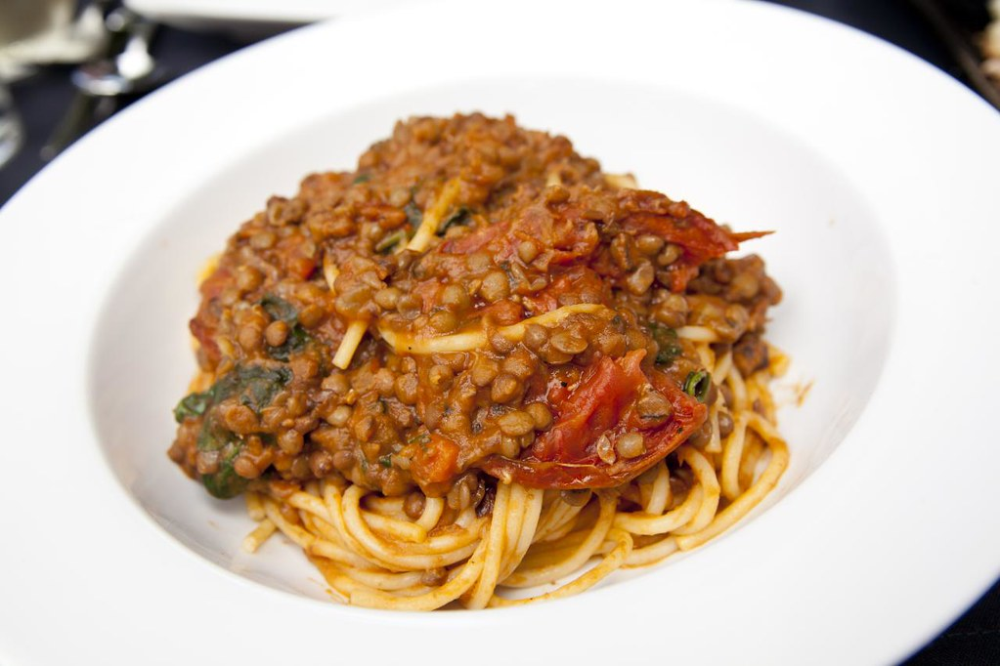

Spaghetti with Lentil-Bolognese

Number of Servings:
Scale Recipe
Ingredients:
1 cup dried green or brown lentils, rinsed and drained
2 tablespoons olive oil
1 onion, finely chopped
3 cloves garlic, minced
1 carrot, diced
1 celery stalk, diced
1 red bell pepper, diced
1 can (28 oz) crushed tomatoes
2 tablespoons tomato paste
1 teaspoon dried oregano
1 teaspoon dried basil
1/2 teaspoon dried thyme
1/2 teaspoon dried rosemary (crushed)
1/2 teaspoon Salt and pepper to taste
1/2 cup red wine (optional)
1 bay leaf
1/4 cup fresh parsley, chopped (for garnish)
500 g Cooked pasta of your choice